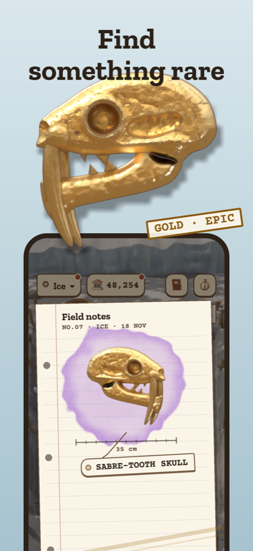

Support

Dig Site is a cosy fossil-digging game for iPhone. Chip, brush and rinse rocks to uncover fossils and treasures, then put your best finds on show in your own museum.
Need a hand?
If something isn't working, or you have a question, write to kennyjallison@gmail.com. Please say which iPhone you have and what you were doing when it happened. A screenshot helps a lot.
Common questions
How do I dig?
Pick a tool at the bottom and drag across the rock: the pick breaks stone, the brush sweeps dust and the water washes the find clean. Go gently near the find to keep it in perfect condition. To see the first-time notes again, open Settings and turn the Guide on.
I bought a look on another iPhone.
Open Settings and tap Restore purchases. Purchases are tied to your Apple Account and shared with Family Sharing.
Where is the Frost Fair?
The Midwinter Frost Fair is a seasonal dig. It opens on 13 December and packs up on 3 January, every year, by your iPhone's own date. Finds you dug there stay in your Book and museum all year.
Is my museum saved?
Yes, on your iPhone, as you play, and in your iPhone backups. Deleting the app deletes the museum.